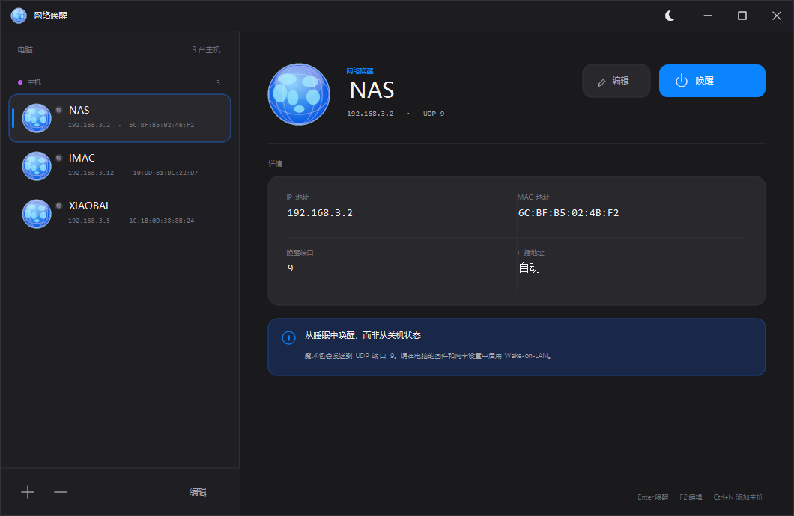
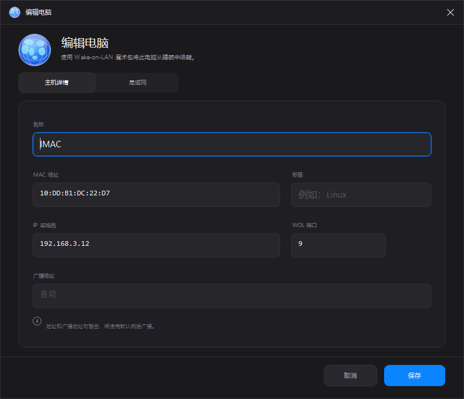
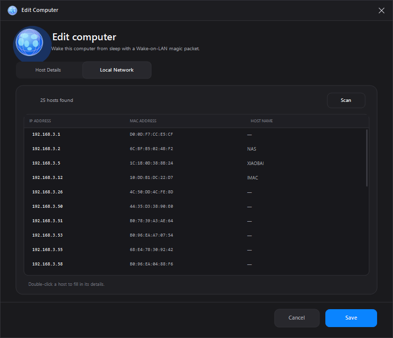
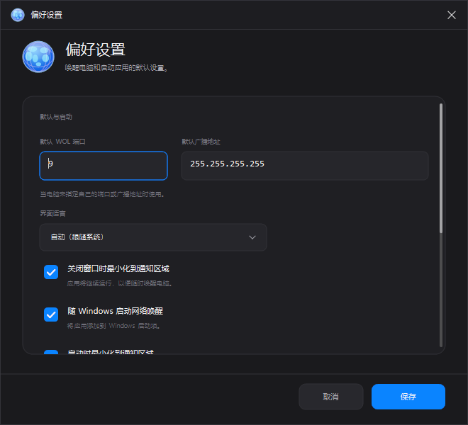
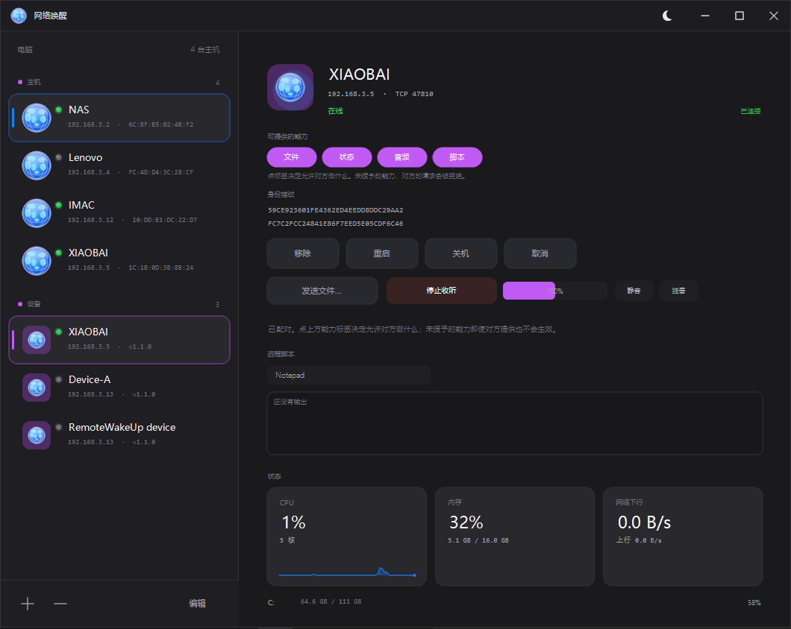
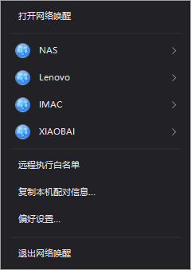

魔术包唤醒
6 个 0xFF 后跟 MAC 重复 16 次，发往目标地址和广播地址各 3 份。目标解析不到时自动改用广播，不会卡在解析上。
Windows 10 / 11 · 64 位 · 免安装
Remote Wake Up 是给 Windows 写的局域网唤醒工具：往同一网段发一个 102 字节的 Wake-on-LAN 魔术包，把休眠的机器叫起来，不用跑到它跟前按电源键。 它还会告诉你那台机器醒了没有——以及，和装了同一个程序的设备之间，传文件、看状态、搬声音。

功能
没有仪表盘，也没有账号。窗口里只有主机列表、详情，和几个确实用得上的按钮。
6 个 0xFF 后跟 MAC 重复 16 次，发往目标地址和广播地址各 3 份。目标解析不到时自动改用广播，不会卡在解析上。
每 4 秒异步 ICMP 探测一次，绿色在线、灰色离线。探测在后台跑，列表不会因为某个网段没回应而卡住。
在编辑窗口里扫一遍网段，1–2 秒列出在线设备，再用 NetBIOS 取回主机名。双击结果直接填进表单。
装了同一个程序的设备先配对，再按能力逐项授权：传文件、看状态、听对方的系统声音，各开各的，不打包给。
标题栏一键切换。窗口、自绘菜单、对话框和输入框都跟着换一套配色，不是给背景刷一层颜色就算深色。
简中、繁中、日、韩、西、法、德、葡、俄各是一个 lang/*.json 文件，默认跟随系统；文件缺失或某个键缺席时回退内置英文。
界面
无边框窗口、自绘标题栏，下面都是程序真实运行时的截图。





设备互联
未配对的设备在 TLS 握手之后立刻被断开，连一条消息都发不出去。配对只授予身份， 每项能力还要单独在配置里打开——装上了不等于被授权。
把文件或文件夹拖到窗口上，发给当前选中的设备；也可以从设备详情里点「发送文件…」。
选中设备即自动订阅，看对方的 CPU、内存、网络折线与磁盘占用。
WASAPI 回环采集 + Opus 编码，把对方的系统声音混到本机播放，每路可单独调音量、静音、solo。音频走明文 UDP，没有加密也没有重传。
只能运行白名单里的条目，且程序内容必须与锁定的 SHA-256 一致、发起设备必须在允许列表里；子进程用受限令牌启动并放进 Job Object，每次尝试都写审计日志。
下载
Windows 10 / 11，64 位。解压即用，不装服务、不写注册表（除非你打开开机自启）。
下载 ZIP（约 2.4 MB）
包内含 RemoteWakeUp.exe、lang/ 下九个语言文件、
README.md、第三方组件许可登记与安全说明。
RemoteWakeUp.exe魔术包只能在同一局域网里叫醒设备，而且目标机器得在 BIOS/固件和网卡驱动里都启用 Wake-on-LAN，网线插着（Wi-Fi 唤醒的支持参差不齐）。
问答
按顺序查三件事：网卡驱动的「允许此设备唤醒计算机」有没有勾上；BIOS/UEFI 里 Wake-on-LAN 有没有开； 网线是不是接着。如果目标那一栏填的是域名，解析失败时程序会自动改用广播，这时两台机器必须在同一网段。
魔术包是二层广播，路由器默认不转发。跨网段需要路由器支持定向广播，或者先 VPN 回同一个局域网。 程序本身不做内网穿透，也没有云端中转。
只用唤醒功能不需要——唤醒是纯发送，不监听端口。设备互联会监听 TCP 47810 与组播 UDP 47811； 音频流用协商出来的动态 UDP 端口。
默认关闭，而且有三道门：条目必须在白名单里、程序内容必须与锁定的 SHA-256 一致、发起方设备必须在允许列表里。
子进程用受限令牌启动并放进 Job Object，超时或退出时整棵树结束。每次尝试（包括被拒绝的）都写进
netlink-audit.jsonl。
不会传到任何地方。程序没有云端服务，能通信的只有你自己配对过的设备，走的是双向 TLS。
主机列表和设置都在本地一个 JSON 文件里：%APPDATA%\RemoteWakeUp\config.json，
用临时文件加原子替换写入，文件损坏时会备份成 .broken-<tick> 再用默认设置继续启动。